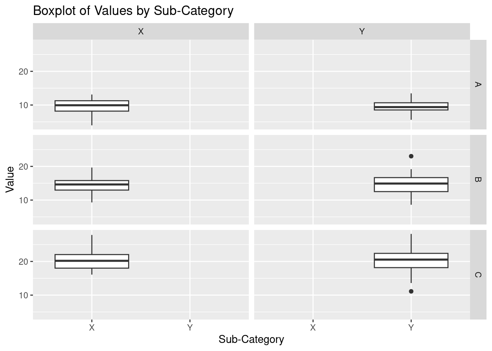

Chapter 5 Data Visualization
5.1 Basic Data Visualization
5.1.1 Introduction to ggplot2

This is package designed for data visualization. It provides a powerful and flexible framework for creating complex and aesthetically pleasing visualizations, allowing users to layer various components such as axes, scales, colors, and geoms to create detailed and customizable plots.
The package is said that it implements the principle of “Grammar of Graphics”. The “Grammar of Graphics” is a conceptual framework for creating graphs by Leland Wilkinson. The process of creating graphs is broken into fundamental components. This allows structure and flexible approach in data visualization. The plots are constructed by a layered approach by implementing these concepts step by step; data, aesthetics(aes), geometrics(geoms), statistical transformations (stats), scales, cordinates and facets.
The package is also under the tidyverse package but can be installed by
install.packages("ggplot2")Once the package is installed, it can be loaded by
library(ggplot2)
1.The Setup - Read the data set, define x and y axis
The Labels - Title, X and Y axis labels
The Theme - Default, Black and White, colored etc.
The Facets - Individual Graphs for each group in data with exactly same range
The Layers or geoms - The actual plot type - e.g Bar plot, Box plot, Violin plot etc.
Here is an example of a layered approach in creating charts by applying the “Grammar of Graphics”.
library(ggplot2)
# Sample data
df <- data.frame(
x = rnorm(100),
y = rnorm(100),
category = sample(c("A", "B"), 100, replace = TRUE)
)
# Creating a scatter plot
ggplot(df, # data
aes(x = x, y = y, color = category)) + #aesthetics
geom_point() + #geometrics
labs(title = "Scatter Plot Example", x = "X-Axis", y = "Y-Axis") +
theme_minimal()
5.1.1.1 Creating Basic Plots
- Scatter Plots
Scatter plot is used to show a numerical relationship between two or more variables for instance height versus weight of footballers. It is also used to detect correlation, the increase in one variable can lead to increase/decrease of another variable. Furthermore scatter plots are used to detect outliers, values that appear out of the general patterns of other data points is said to be an outlier in this case. However, scatter plots is not suitable when working with categorical data especially when only two variables are to be analyzed.
Lets create a basic scatter plot to compare height and weight;-
#Prepare a Sample data
df <- data.frame(
height = c(150, 160, 170, 180, 190),
weight = c(50, 60, 70, 80, 90)
)
# Creating a basic scatter plot
ggplot(df, # data
aes(x = height, y = weight)) + # aesthetics
geom_point()  To make the chart more informative, titles and labels are added.
# Creating a basic scatter plot
ggplot(df, # data
aes(x = height, y = weight)) + # aesthetics
geom_point() +
labs(title = "Height vs. Weight", x = "Height (cm)", y = "Weight (kg)") +
theme_minimal()
Lets explain the chart step by step;-
ggplot(df, aes(x = height, y = weight)): Initializes the ggplot object, specifying the data frame (df) and mapping theheightvariable to the x-axis and theweightvariable to the y-axis using theaes()function.geom_point(): Creates the scatter plots by adding dots to the chartlabs(): Adds the title and the axis labels to the chart.theme_minimal(): Applies a minimal theme to the plot for a minimalist and clean appearance.
<-Practical exercise: Creating scatter plots for different datasets->
- Bar Charts
Bar charts are used to represent both categorical and numeric data in form of rectangular bars. The length/height of each category represents its numeric value. It may corresponds to either length, count, age or any other numerical value. Bar charts are used when;-
- Comparing categorical data
- Visualizing summarized data for instance aggregated sum, average or any other summary statistics.
- Showing frequency or count for instance representing the number of products sold per each category.
- Ranking data. Bar charts can effectively represents ranks especially in descending/ascending order for instance ranking the life expectancy of different countries.
- Other type of complex bar charts like stacked bar charts can be used to compare part-to-whole relationships.
There are many more uses of bar charts however there are some use cases where bar charts are not preferred like when working with continuous data, scatter and line charts are more befitting. Also, bar charts are not appropriate where data has too many categories, heatmaps will do better.
To create a simple bar chart using ggplot2, we use geom_bar to define thats its a bar chart.
# Sample data
df <- data.frame(
category = c("A", "B", "C", "D"),
value = c(23, 17, 35, 10)
)
## The data set above will be used to create a bar chart
# Creating a bar chart
ggplot(df, aes(x = category, y = value)) +
geom_bar(stat = "identity") +
labs(title = "Value by Category", x = "Category", y = "Value") +
theme_minimal()
<-Practical exercise: Creating bar charts for categorical data.->
- Histograms